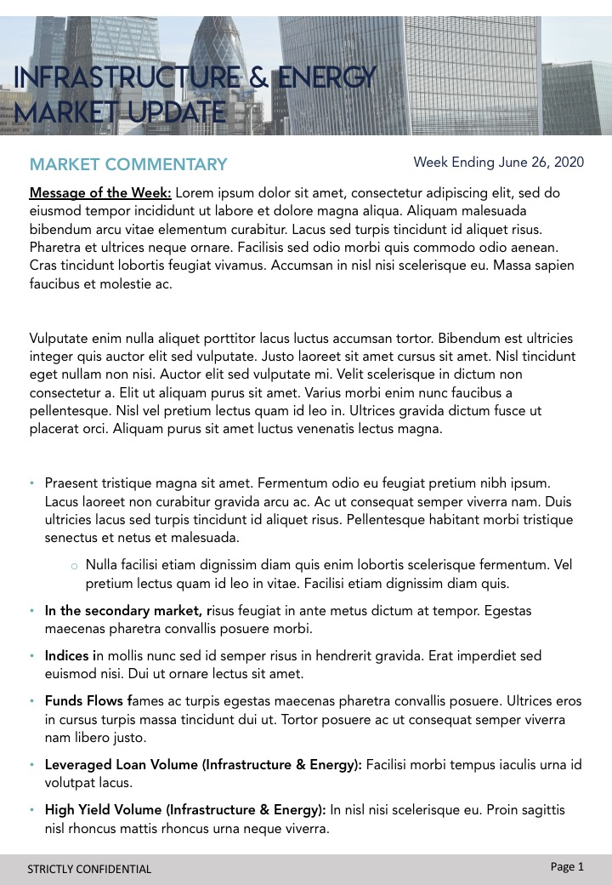
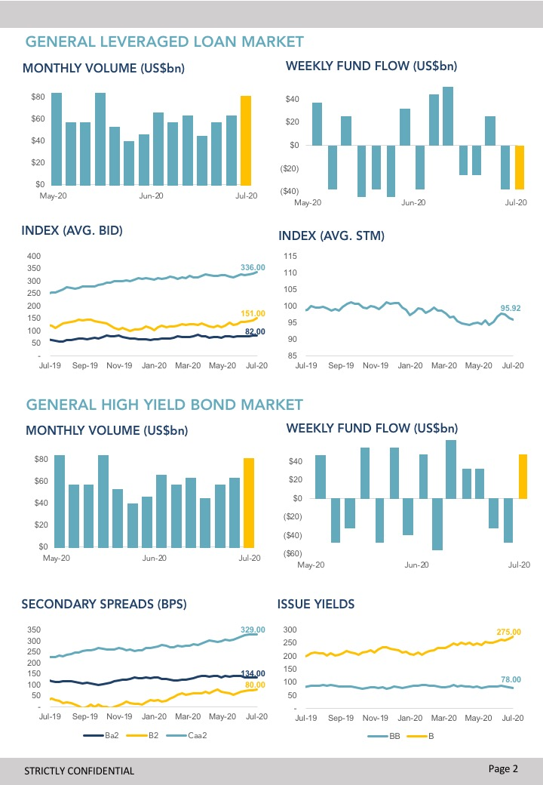
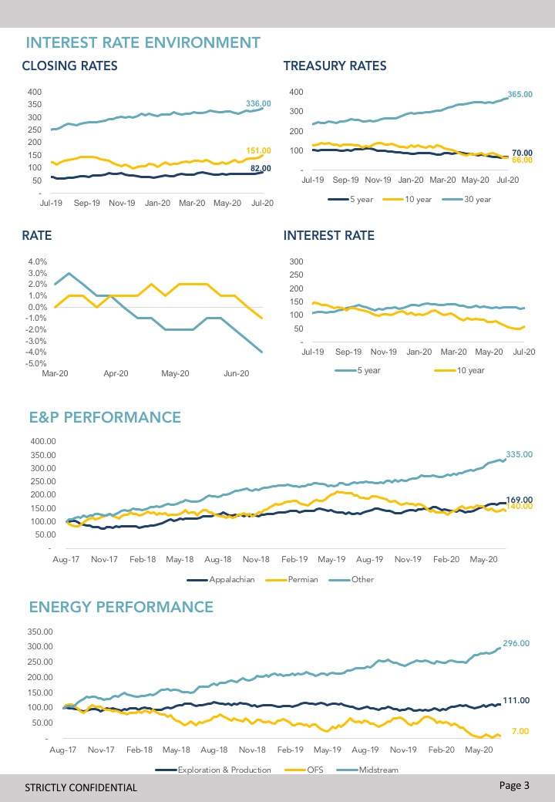
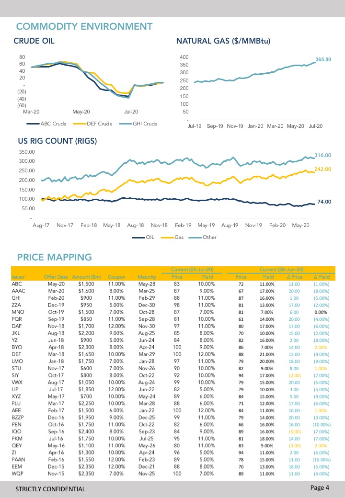

* Note: The images below of the report are for illustrative purposes only since my work with clients are strictly confidential. These images do not reflect the real figures presented in the real report sent out to my clients and is heavily simplified and shortened.
   As the bridge between capital consumers and capital providers, our Debt Capital Markets team spent a substantial amount of time marketing our debt products to a wide assortment of capital consumers.These included infrastructure funds, generalist private equity funds, and other investors in the infrastructure space, who would utilize our debt-raising capabilities to fund acquisitions of toll roads, power plants, pipelines, and other fixed assets.
Taking inspiration from competing debt capital markets practices at other banks, we decided a regular informative newsletter to investors would be valuable in keeping our clients apprised of market trends and strengthening our relationships with them. Most importantly, however, this would be a strong demonstration of our team’s analytical and technical capabilities, which was a large component of the service we provide to our clients. Moreover, as a weekly distribution it was essential that an automated backend was developed to reduce refresh time and manual labor.
And so working together as the project lead with several senior managers across the Debt Capital Markets and Infrastructure Coverage teams, I sketched out a basic roadmap with key tasks to develop our newsletter product:
Now reaching several months of distribution, the newsletter has been touted as a resounding success by our clients and internal recipients alike. Senior managers have indicated the information in the report has led to interesting conversations with clients about the Debt Capital Market team’s capabilities and expertise, as well as potential opportunities for us to be involved in future debt product needs.